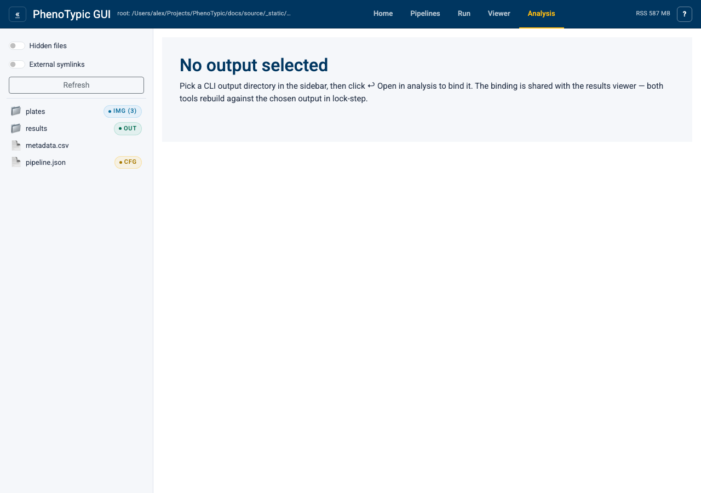
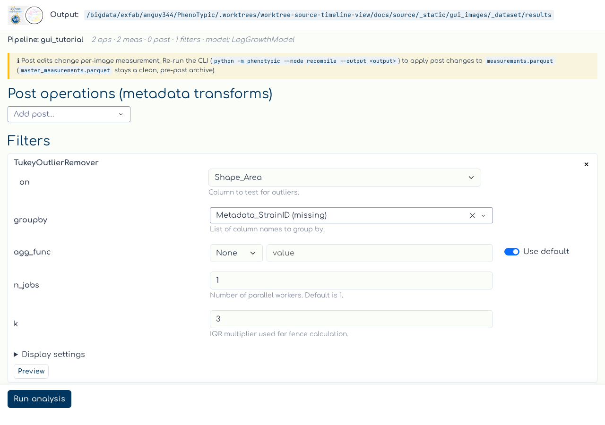
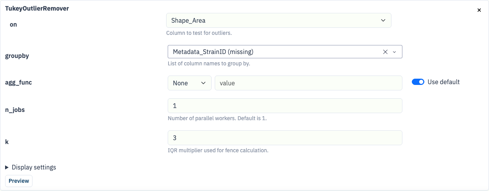
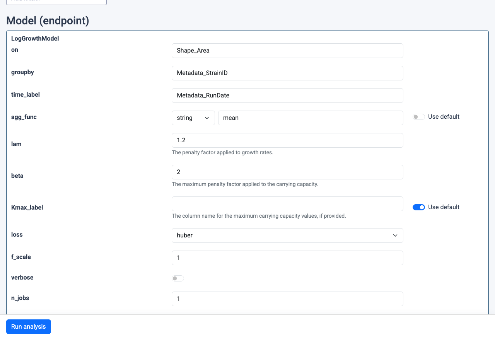

Analysis sub-app#
The Analysis tab composes the phenotypic.analysis chain — filters
plus an endpoint model — over the curated measurements produced by a
CLI run. Recipes are persisted as fields on the pipeline itself
(pipeline.json next to master_measurements.parquet), so the same
chain re-runs deterministically from the CLI when you --recompile.
Hub mount (empty state)#
Open the Analysis tab in the hub:

Like the Viewer, the hub-mounted Analysis sub-app starts empty. Pick a CLI output directory in the sidebar — the hand-off banner picks up your selection and shows the resolved path. Click ↩ Open in analysis to bind. The bind endpoint is shared with the Results Viewer, so picking an output here also binds the viewer to the same directory.
Note
The standalone launcher is still useful for headless workflows or long-running fits where you don’t need the rest of the hub:
uv run python -m phenotypic.gui.analysis \
--root <path-to-cli-output> --port 8051
What you can do#
Author the post stack (metadata transforms): pick a class from the “Add post…” dropdown (
PrependString,AppendString,ExpandMetadata,MergeMetadata). The recompile banner reminds you that post edits change per-image measurement and require a CLI re-run (python -m phenotypic --recompile <output>) to reachmaster_measurements.parquet.Author the filter chain: pick a class from the “Add filter…” dropdown (
EdgeCorrector,TukeyOutlierRemover). Filters reshape the aggregate measurements during analysis — they don’t touch the master.Pick the endpoint model:
LogGrowthModelorLinearSoftplusModel. Only one model can be configured at a time; selecting(no model)clears it and disables the run button.Tune params inline: every section card hosts an editable form generated from the analyzer’s constructor signature. Bools become switches, numerics become number inputs,
Literal[...]becomes a dropdown, and multi-type unions (e.g.LinearSoftplusModel.s0_prior) render as a small type-tag dropdown plus an adaptive value input. Edits save to<output>/pipeline.jsonautomatically.Run analysis: click
Run analysis. The sub-app reads<output>/measurements.parquet(the curated mirror), runs the chain viapipeline.analyze(...), and writes<output>/analysis.csvand<output>/analysis.parquetnext to the master.
Loaded state#
After binding, the page loads with the pipeline summary header, the recompile reminder banner, and any pre-existing post/filter/model sections rendered as editable cards:

Each section card is a fully editable form generated from the
analyzer’s constructor signature. Bools become switches, numerics
become number inputs, Literal[...] becomes a dropdown, and
list[T] / tuple[T, ...] become comma-separated text inputs.
Editing any value persists to <output>/pipeline.json automatically:

The model section showcases the more advanced widget kinds: the
agg_func field is a multi-type union (bool | float | int | str | None) rendered as a type-tag dropdown plus an adaptive value input;
loss is a Literal["linear", "soft_l1", "huber", "cauchy", "arctan"] dropdown; Kmax_label is an Optional[str] paired with a
“Use default” toggle that strips the param from the constructor
kwargs when on:

CLI parity#
Every section you author from the GUI is persisted to
<output>/pipeline.json. A subsequent python -m phenotypic --recompile <output> run reads that file and emits the same analysis.{csv,parquet}
without booting the GUI — so pipeline.json is the single
reproducibility surface.
Where to next#
GUI hub guide — the full reference for the hub.
Run Locally — produce a CLI output before opening the analysis sub-app.
View Results — curate
measurements.parquetbefore running analysis.